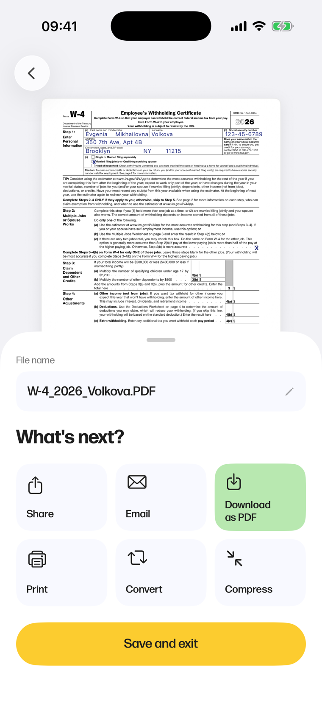

Hooh Document Workspace — от понимания документа к действию с ним
После того как Hooh закрыл чтение, осталась дыра с действием: документ человек понимал, но всё равно перепечатывал одни и те же данные — имя, номер документа, адрес, ИНН — в каждую новую форму.
Smart Fill эту дыру закрывает. Hooh распознаёт поля формы и заполняет их из уже загруженных документов, а дальше даёт подписать и сохранить, не выходя из приложения. Вокруг него выросла целая рабочая среда — десять инструментов по общим правилам, от разметки и перевода до объединения и сжатия, в одно касание от открытого документа.
- Сроки
- 6 недель, от начала до конца
- Система
- 10 сценариев, один каркас
- Передача
- Готово к разработке

Проблема
Даже когда документ понятен, действие всё равно стоит времени. Одни и те же личные данные перепечатываются в каждую новую форму, место для подписи приходится искать, результат — конвертировать, чтобы отправить или сохранить. И каждый шаг, который выталкивал человека в другое приложение, тихо утекал вместе с поводом возвращаться в Hooh. Чтение закрыл первый релиз; всё, что после него, оставалось ручным.
Задача
Развернуть Hooh из инструмента для чтения в полный документный процесс. Дать заполнять и подписывать любую форму на iOS данными, которые уже лежат в загруженных документах — не теряя контроля над тем, что в итоге отправится.
Пользователи
Та же аудитория, что у первого релиза Hooh: экспаты, диджитал-номады и люди без юридического образования. У большинства каждый месяц проходит несколько новых форм — визовые анкеты, договоры аренды, школьные бумаги, банковские документы.
Объём
Режим Smart Fill с ручным откатом, подпись — и рисованием, и камерой, явная модель сохранения и версий и ещё семь инструментов по общим правилам: разметка, перевод, распознавание текста, объединение, страницы, конвертация и сжатие.
Процесс
Сессии с теми, кто пользовался первым релизом, показали внятную закономерность: данные, которые просит форма, почти всегда уже лежат в загруженном документе. Из этого и вырос Smart Fill — вместо того чтобы просить перепечатать, распознать поля и переиспользовать то, что Hooh уже знает.
Ограничением, определившим все решения ниже, было доверие. Автозаполнение полезно только если видно, что именно подставилось, это можно перебить и можно выключить целиком. Весь сценарий построен вокруг этого права вето.
1. Smart Fill — автоматизация с правом вето
Hooh распознаёт поля формы и заполняет их из сохранённых документов — и ничего не отправляется молча. Когда совпадение найдено, документы-источники остаются закреплены сверху, так что видно, откуда взято; любое значение правится на месте; один переключатель возвращает всю форму в ручной режим. По умолчанию режим включён — ради сэкономленного времени он и делался, — но до ручного заполнения всегда одно касание. Если совпадения нет, форма подсвечивает поле и идёт дальше: незаконченная форма — это полноценное состояние, а не ошибка.


2. Подпись — один раз сделал, дальше переиспользуешь
Одна подпись, сделанная один раз. Нарисовать на холсте или снять существующую камерой — в обоих случаях она становится переиспользуемым объектом, попадает в библиотеку и готова лечь в следующий документ.


3. Разметка и правки — мощно, но без обучения
Разметка — обычно то место, где редактор превращается в кабину пилота. В Hooh на всё один переключатель инструментов и одна система цвета — маркер, текст, фигуры, свободное перо, — поэтому органы управления не размножаются. Инструмент появляется там, где палец коснулся экрана, его параметры живут в одной шторке, а всё нарисованное лежит отдельным слоем над оригиналом. Отменить одну пометку или снять всю разметку: исходная страница не меняется никогда.
4. Сохранение — без страха затереть
Сохранение никогда не затирает по случайности. Исходный файл остаётся нетронутым: можно сохранить новую копию или отпочковать совсем новый документ, и все версии живут внутри самого документа — переключаются из панели навигации и переименовываются на месте. Итерации по одной форме сохраняют каждое состояние, не засоряя список документов.
Остальные инструменты
Ещё шесть инструментов достраивают рабочую среду — все по тем же правилам и все доступны с того же экрана документа. Каждый — законченный сценарий в сжатом виде: выбрать, одно янтарное подтверждение, готово.

Итог
Спроектировано целиком примерно за шесть недель и передано в разработку. Все решения тянули в одну сторону: приложение снимает рутину, последнее слово остаётся за человеком. В рамках контракта этот объём до публичного релиза не дошёл — он готов к запуску, когда продукт вернётся к этой работе.
Десять сценариев, один каркас: только четыре самые глубокие карты сценариев дают почти шестьдесят экранов, но у всех инструментов общая шапка, общий паттерн подтверждения и общий экран завершения — ничего глубже одного уровня.
Прототип на устройстве: каждый экран крутился живьём на iOS — зациклённые записи сценариев и стали основой спецификации для разработки.
Передача закрыта: дизайн-система, компоненты и все десять сценариев описаны — собирается без ещё одного захода дизайнера.